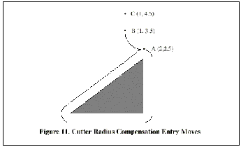

The general method includes programming an alignment move and two entry moves. The entry moves given above will be used as an example. Here is the relevant code again:
N0010 G1 X1 Y4.5 (make aligment move to point C)
N0020 G41 G1 Y3.5 (turn compensation on and make first
entry move to point B)
N0030 G3 X2 Y2.5 I1 (make second entry move to point
A)
See Figure 11. The figure shows the two entry moves but not the alignment move.
First, pick a point A on the contour where it is convenient to attach an entry arc. Specify an arc outside the contour which begins at a point B and ends at A tangent to the contour (and going in the same direction as it is planned to go around the contour). The radius of the arc should be larger than half the diameter given in the tool table. Then extend a line tangent to the arc from B to some point C, located so that the line BC is more than one radius long.
|
After the construction is finished, the code is written in the reverse
order from the construction. Cutter radius compensation is turned
on after the alignment move and before the first entry move. In the
code above, line N0010 is the alignment move, line N0020 turns compensation
on and makes the first entry move, and line N0030 makes the second
entry move.
|
|

|
In this example, the arc AB and the line BC are fairly large, but they need not be. For a tool path contour, the radius of arc AB need only be slightly larger than the maximum possible deviation of the radius of the tool from the exact size. Also for a tool path contour, the side chosen for compensation should be the one to use if the tool is oversized. As mentioned earlier, if the tool is undersized, the interpreter will switch sides.